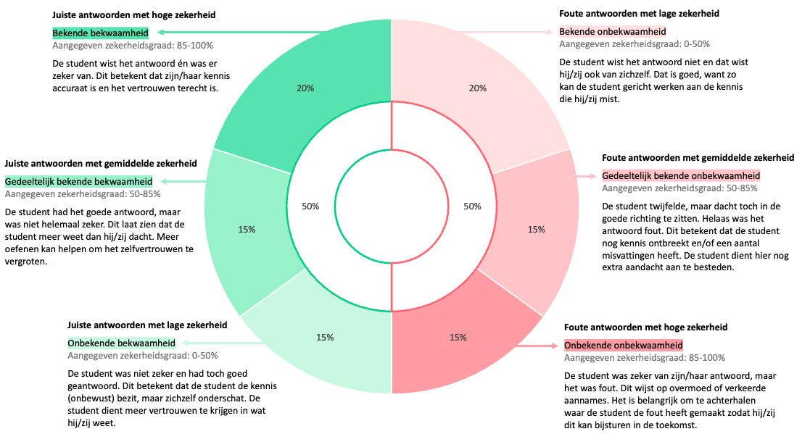
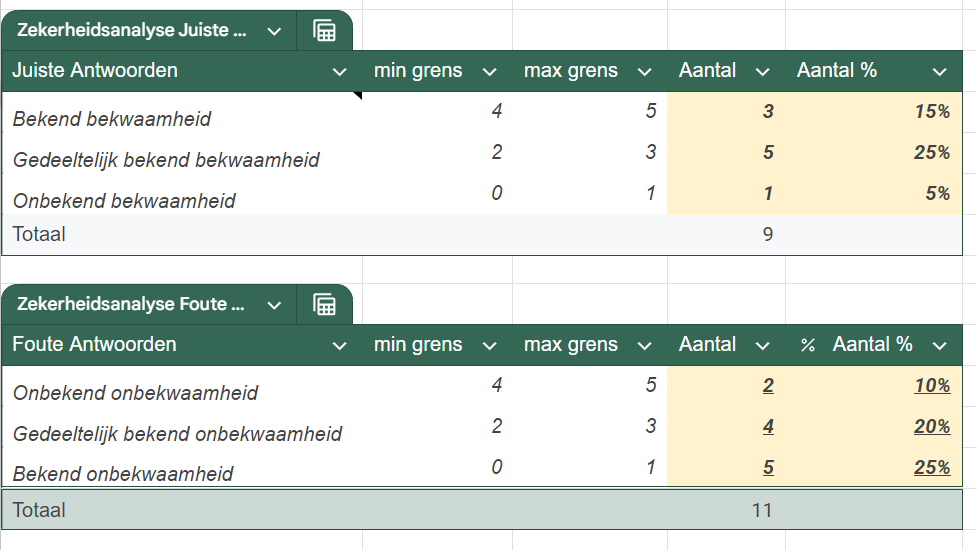
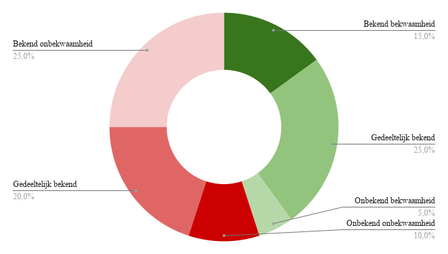

Stap 2: Bekijk de zekerheidsanalyse in de Excel-file
Na het invullen van de antwoorden en zekerheidsgraden van de leerlingen genereert de Excel-file automatisch een overzicht van het inschattingsvermogen van de leerling. Dit overzicht wordt weergegeven in een visuele analyse die toont in welke mate de inschattingen van de leerling overeenkomen met de werkelijke resultaten.
De antwoorden worden daarbij onderverdeeld in zes categorieën. Elke categorie geeft inzicht in zowel de kennis van de leerling als de mate waarin hij of zij deze kennis correct inschat (Figuur 3).
We onderscheiden volgende 6 categorieën:
- Bekende bekwaamheid: de leerling kende het juiste antwoord en was daar ook zeker van → juist antwoord met een hoge zekerheidsgraad (4 of 5).
- Gedeeltelijk bekende bekwaamheid (juist antwoord): de leerling gaf een correct antwoord, maar twijfelde nog → juist antwoord met een gemiddelde zekerheidsgraad (2 of 3).
- Onbekende bekwaamheid: de leerling gaf een correct antwoord, maar met lage zekerheid → juist antwoord met lage zekerheid (gok of sterke twijfel).
- Bekende onbekwaamheid: de leerling gaf een fout antwoord en was zich daarvan bewust → fout antwoord met lage zekerheid.
- Gedeeltelijk bekende onbekwaamheid: de leerling twijfelde, maar dacht toch juist te zitten → fout antwoord met een gemiddelde zekerheidsgraad.
- Onbekende onbekwaamheid: de leerling was overtuigd van een fout antwoord → fout antwoord met hoge zekerheid.

Figuur 3: Overzicht van de zes categorieën van bekwaamheid en onbekwaamheid op basis van de combinatie van antwoord correctheid en zekerheidsgraad van de leerling.
Deze indeling helpt u om niet alleen te zien wat een leerling kent, maar ook hoe goed hij of zij het eigen kennen en kunnen kan inschatten. De automatisch gegenereerde grafiek en tabellen bevinden zich onderaan in het bestand (Figuur 4).


Figuur 4: Overzicht van de zes categorieën van bekwaamheid en onbekwaamheid in het Excel-bestand.